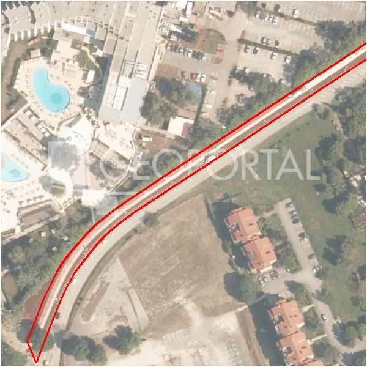

#35839 · Građevinsko zemljište na vrlo traženoj lokaciji u mirnom predjelu
Poreč, Poreč, Istarska · zemljiste · njuskalo · status active · oglas ↗
Ocjena
- Score
- 61 rule 61 · LLM – · 12.09.2026.
- RLV
- 467.000 € (229 €/m²) · ratio 0,99
- Ukupna investicija
- 4,52 M€
- GBP
- 1.635 m²
- Feedback
- –
- CRM
- –
Oglas
- Cijena
- 471.250 € (160 €/m²)
- Površina
- 2.947 m² · DKP 2.044 m² (odstupanje -30,6 %)
- Prodavatelj
- agencija · PARENTIUM PREMIUM Real Estate d.o.o
- Prvi put
- 11.09.2026. · zadnje 11.09.2026. · 0 d na tržištu
Povijest cijene
| Datum | Cijena |
|---|---|
| 11.09.2026. | 471.250 € |
Flagovi
zone_uncertainty zona nije pregledana (reviewed: false) (−5)llm_pending LLM ekstrakcija/ocjena nedostupna
Komponente score-a
| rlv | {'gbp': 1635.448, 'kis': 0.8, 'nkp': 1226.586, 'noi': None, 'rlv': 467435.9256521747, 'ratio': 0.9919064735324662, 'value': None, 'phases': 1, 'profile': 'obala_visestambeno', 'gdv_neto': 5396978.4, 'cost_soft': 163544.80000000002, 'gdv_bruto': 6746223.0, 'kis_known': False, 'total_inv': 4522727.08, 'cost_build': 3270896.0, 'cost_other': 588761.28, 'cost_sales': 202386.69, 'demolition': False, 'gbp_source': 'kis', 'rlv_per_m2': 228.65217391304387, 'parcel_area': 2044.31, 'parcelation': False, 'roi_on_cost': 0.14855298984788629, 'profit_at_ask': 671864.6300000004, 'cost_demolition': 0.0, 'total_inv_phase': 4522727.08, 'parcel_area_effective': 2044.31, 'sale_price_per_m2_nkp': 5500.0} |
| hard | [] |
| info | ['llm_pending'] |
| rubric | {'permits': {'max': 5.0, 'detail': {'permit': 'none'}, 'points': 0.0}, 'location': {'max': 15.0, 'detail': {'source': 'rlv.yaml:istra_zapad/row2', 'sale_price_per_m2_nkp': 5500.0}, 'points': 11.5}, 'physical': {'max': 4.0, 'detail': {'slope_pct': 9.02, 'road_access': 'yes', 'slope_points': 2.0}, 'points': 4.0}, 'liquidity': {'max': 3.0, 'detail': {'n_cuts': 0, 'points_cut': 0.0, 'points_days': 0.008333333333333333, 'seller_type': 'agencija', 'points_fresh': 0.5, 'price_cut_pct': None, 'days_on_market': 1, 'points_private': 0}, 'points': 0.51}, 'rlv_ratio': {'max': 25.0, 'detail': {'rlv': 467436, 'ratio': 0.992, 'asking_price': 471250.0}, 'points': 14.76}, 'ticket_fit': {'max': 10.0, 'detail': {'asking_price': 471250.0}, 'points': 9.71}, 'zone_quality': {'max': 8.0, 'detail': {'reason': 'zona nepoznata', 'source': 'nepoznato', 'zone_class': None}, 'points': 2.0}, 'profit_potential': {'max': 20.0, 'detail': {'roi_on_cost': 0.149, 'profit_at_ask': 671865}, 'points': 17.37}, 'price_vs_benchmark': {'max': 10.0, 'detail': {'source': 'auto:Poreč', 'deviation': 0.08, 'ask_eur_m2': 160, 'benchmark_eur_m2': 173.89}, 'points': 6.21}} |
| weights | {'llm': 0.4, 'rule': 0.6, 'model': 0.0} |
| penalties | {'zone_uncertainty': 5} |
| raw_score | 66,1 |
| rlv_notes | [] |
| flag_notes | {'max_gbp': 1635, 'total_inv': 4522727, 'zone_code': None, 'zone_class': None, 'zone_source': 'nepoznato', 'zone_reviewed': None} |
| caps_applied | [] |
GIS
- Čestica
- k.o. 323748, k.č. 3713/2 (pin_buffer, 0,65); k.o. 323748, k.č. 3856 (pin_buffer, 0,53); k.o. 323748, k.č. 3859 (pin_buffer, 0,51)
- Zona
- – (–)
- kig / kis / katnost
- – / – / –
- GP / UPU
- – · UPU –
- Pristup / nagib
- yes · 9,0 % (max 11,8 %)
- More
- 104 m · red 2 · ZOP 1000
- Zaštite
- Natura ne · zaštićeno ne · kulturno dobro ne
- Zgrade na čestici
- 0 %
- Match
- 0,65
Karta
Ortofoto (DOF)

RLV kalkulacija — pretpostavke
| gbp | {'value': 1635.448, 'source': 'kis'} |
| kis | {'value': 0.8, 'source': 'default_profila'} |
| sea_row | {'value': '2', 'source': 'gis'} |
| soft_pct | {'value': 0.05, 'source': 'profil'} |
| nkp_ratio | {'value': 0.75, 'source': 'profil'} |
| cost_other | {'value': 588761.28, 'source': 'profil: doprinosi+uređenje po m² GBP, financiranje+rezerva % gradnje'} |
| parcel_area | {'value': 2044.31, 'source': 'dkp'} |
| asking_price | {'value': 471250.0, 'source': 'oglas'} |
| margin_on_cost | {'value': 0.15, 'source': 'profil'} |
| build_cost_per_m2_gbp | {'value': 2000.0, 'source': 'profil'} |
| sale_price_per_m2_nkp | {'value': 5500.0, 'source': 'rlv.yaml:istra_zapad/row2'} |
| transfer_tax_and_acquisition | {'value': 0.06, 'source': 'profil'} |
Ekstrakcija iz oglasa
| utilities | ['struja', 'voda'] |
Benchmarks mikrolokacije
| Vrsta | Vrijednost | n | Od | Izvor |
|---|---|---|---|---|
| land_ask_eur_m2 | 174 | 302 | 11.09.2026. | auto |
| newbuild_sale_eur_m2_nkp | 3.695 | 8 | 11.09.2026. | auto |
Opis oglasa
PRILIKA! Građevinsko zemljište na prodaju, površine 2947m2, smješteno na mirnoj poziciji, samo par stotina metara udaljenosti od centra mjesta. Parcela ima asfaltirani pristup, pravokutnog je oblika te se neposredno do nje nalaze priključci za struju i vodu. Stambene je namjene te je prema prostornom planu dozvoljena izgradnja dvije samostojeće kuće.